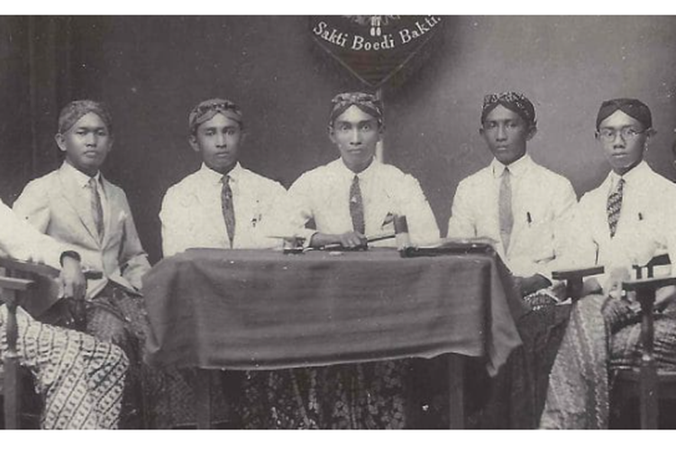

Pada awal abad ke-20, Indonesia berada di bawah penjajahan Belanda, dengan kondisi sosial dan politik yang penuh tekanan. Meskipun masyarakat Indonesia terdiri atas berbagai suku, agama, dan budaya, perlawanan terhadap penjajah sering terpecah karena perjuangan masih dilakukan secara kedaerahan. Namun, munculnya pendidikan modern, pers yang berkembang, dan pengaruh ideologi kebangsaan dari dunia luar mulai membangkitkan kesadaran kolektif di kalangan pemuda.
Organisasi-organisasi pemuda seperti Jong Java, Jong Sumatranen Bond, Jong Ambon, dan Jong Islamieten Bond didirikan dengan tujuan meningkatkan pendidikan, melestarikan budaya daerah, dan menyuarakan perlawanan terhadap penjajah. Namun, perjuangan yang terfragmentasi membuat mereka mulai menyadari bahwa untuk meraih kemerdekaan, persatuan nasional sangat diperlukan. Kesadaran inilah yang mendorong ide untuk menyelenggarakan pertemuan nasional yang dapat mempersatukan visi dan perjuangan para pemuda di Indonesia.
Kongres Pemuda I dilaksanakan pada tanggal 30 April hingga 2 Mei 1926 di Batavia (Jakarta) di bawah kepemimpinan Muhammad Tabrani. Kongres ini dihadiri oleh berbagai organisasi pemuda dari berbagai daerah, seperti Jong Java, Jong Sumatranen Bond, Jong Ambon, Jong Bataks Bond, dan Jong Islamieten Bond. Para peserta berkumpul untuk membahas cara mempererat kerja sama di bidang sosial, ekonomi, dan budaya di antara organisasi-organisasi pemuda.
Selain itu, kongres ini juga menjadi momen penting untuk membangun kesadaran tentang perlunya persatuan di tengah keberagaman bangsa. Walaupun Kongres Pemuda I belum menghasilkan keputusan besar yang konkret, pertemuan ini menjadi landasan awal yang penting. Hubungan antarorganisasi yang lebih erat mulai terbentuk, dan pemuda Indonesia semakin memahami arti pentingnya bergerak bersama sebagai satu bangsa.
Setelah Kongres Pemuda I, kesadaran akan pentingnya persatuan semakin kuat. Pada tahun 1928, organisasi PPPI (Perhimpunan Pelajar-Pelajar Indonesia) mengambil inisiatif untuk menyelenggarakan Kongres Pemuda II. Organisasi ini dianggap memiliki pandangan yang lebih progresif dan nasionalis. Panitia kongres dibentuk dengan Sugondo Joyopuspito sebagai ketua dan Muhammad Yamin sebagai sekretaris.
Muhammad Yamin, yang dikenal sebagai pemikir kebangsaan, berperan penting dalam mengintegrasikan berbagai ide tentang persatuan bangsa. Proses persiapan Kongres Pemuda II melibatkan banyak diskusi dan koordinasi di antara organisasi-organisasi pemuda yang memiliki latar belakang berbeda. Panitia berusaha menyatukan pandangan dan tujuan untuk memastikan bahwa kongres ini mampu menghasilkan keputusan yang lebih konkret dibandingkan Kongres Pemuda I.
Kongres Pemuda II diselenggarakan selama dua hari di tiga lokasi berbeda di Batavia, dengan partisipasi lebih luas dibandingkan kongres sebelumnya.
Pada hari pertama, kongres bertempat di Gedung Katholieke Jongelingen Bond. Diskusi utama difokuskan pada pentingnya persatuan sebagai syarat utama untuk memperjuangkan kemerdekaan. Dalam pidato-pidatonya, para pemimpin pemuda seperti Muhammad Yamin menekankan bahwa perpecahan hanya akan menguntungkan penjajah, sementara persatuan akan memperkuat perjuangan bangsa.
Pada hari kedua pagi, kongres dilanjutkan di Gedung Oost Java Bioscoop, dengan topik utama membahas peran bahasa sebagai alat pemersatu bangsa. Para peserta sepakat bahwa bahasa Indonesia, yang telah mulai digunakan oleh berbagai kalangan, harus ditetapkan sebagai bahasa persatuan. Keputusan ini dianggap strategis untuk mempersatukan masyarakat yang sebelumnya terpisah oleh bahasa daerah.
Pada malam hari, rapat terakhir diadakan di Gedung Indonesia Clubhuis. Dalam sesi ini, rumusan Sumpah Pemuda disusun berdasarkan hasil diskusi sebelumnya. Ikrar ini kemudian dibacakan dan diresmikan sebagai deklarasi bersama oleh seluruh peserta kongres. Sumpah Pemuda menjadi wujud nyata tekad para pemuda untuk bersatu dan berjuang demi kemerdekaan Indonesia.
Deklarasi Sumpah Pemuda terdiri atas tiga poin utama, yaitu:
Rumusan ini mencerminkan semangat persatuan yang melampaui perbedaan suku, agama, dan budaya. Para pemuda mengikrarkan bahwa mereka memiliki satu tujuan bersama, yaitu memperjuangkan kemerdekaan bangsa.
Dalam kongres ini, Wage Rudolf Supratman memperkenalkan lagu Indonesia Raya, yang dimainkan secara instrumental. Lagu ini tidak dinyanyikan karena khawatir akan mendapat sensor dari pihak kolonial. Namun, liriknya telah disebarluaskan kepada peserta dan diterima dengan penuh semangat. Lagu ini kemudian menjadi simbol kebangkitan nasional dan, setelah proklamasi kemerdekaan, ditetapkan sebagai lagu kebangsaan Indonesia.
Sumpah Pemuda memiliki dampak besar dalam sejarah perjuangan Indonesia. Ikrar ini berhasil menyatukan pemuda dari berbagai daerah dan latar belakang di bawah satu identitas nasional, yaitu bangsa Indonesia. Penetapan bahasa Indonesia sebagai bahasa persatuan mempercepat penyebaran gagasan kebangsaan dan memperkuat komunikasi antardaerah.
Semangat Sumpah Pemuda juga menjadi inspirasi bagi gerakan nasional lainnya, seperti pendirian organisasi politik dan perjuangan budaya yang lebih inklusif. Tekad untuk bersatu yang diikrarkan dalam Sumpah Pemuda terbukti menjadi landasan kuat hingga tercapainya kemerdekaan Indonesia pada 17 Agustus 1945.
Sampai hari ini, Sumpah Pemuda dikenang sebagai salah satu tonggak sejarah terpenting dalam perjalanan bangsa Indonesia. Nilai-nilai persatuan, kebangsaan, dan penghormatan terhadap keberagaman yang terkandung dalam Sumpah Pemuda terus relevan dalam menghadapi tantangan zaman. Sumpah ini menjadi pengingat bahwa persatuan adalah kekuatan utama bangsa, yang harus dijaga dan diwariskan kepada generasi penerus.